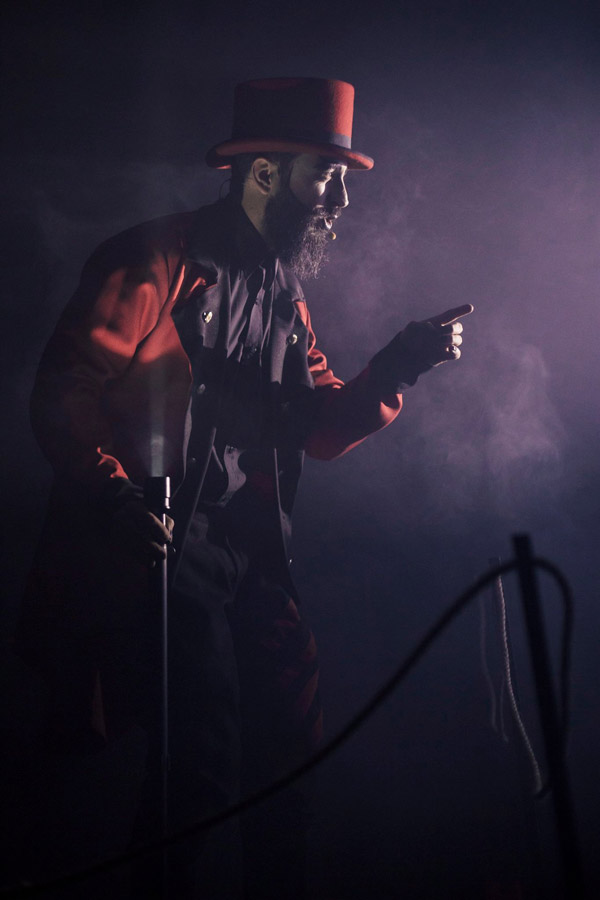
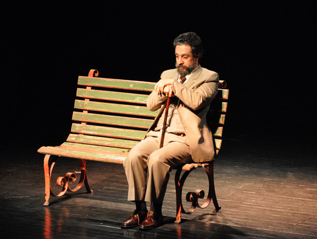
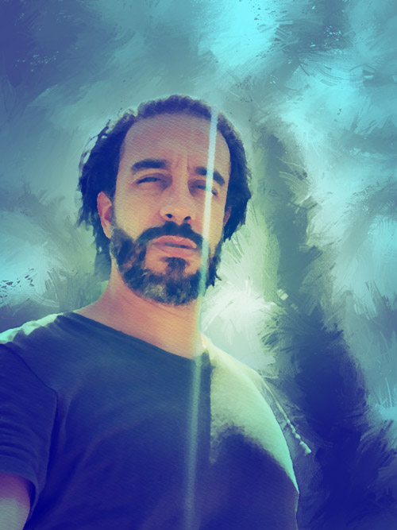
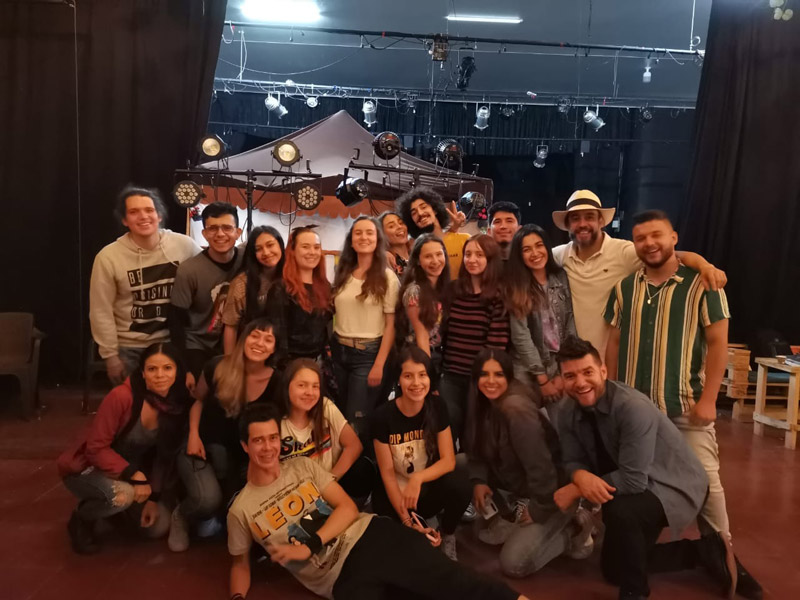
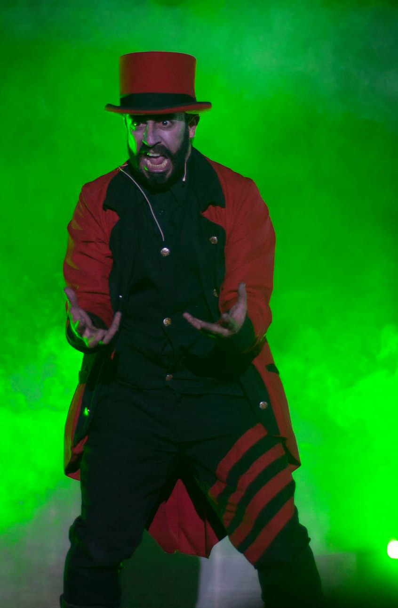
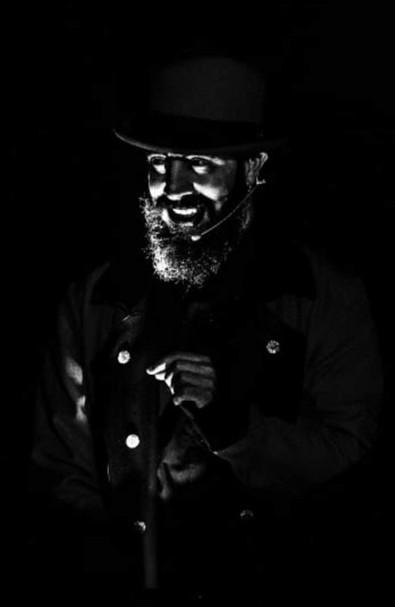
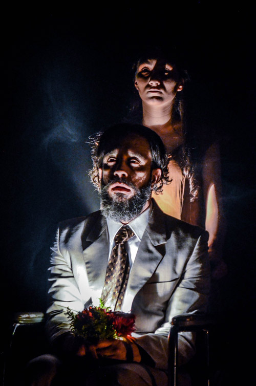
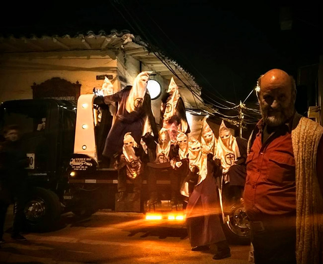

Entrevistando a Javier Gómez Henao
Yo he visto el rostro del fracaso, lo he saboreado y me he divertido con él
Por Cristóbal Peláez G.
Publicado en el Periódico Medellin en escena No. 69

En las noches, en ese «friíto» sabrosongo que hace en Marinilla, a tan solo 48 kilómetros de Medellín, de las cosas más reconfortantes que uno pueda vivir, teatralmente hablando, es realizar una función en la sede de Teatro Girante y luego compartir el convite nocturnal. Allí, en ese antiguo y otrora destartalado teatro parroquial, que se posa encima de un almacén agropecuario con decenas de pollitos y pájaros encarcelados, todo está integrado: escenario, patio de butacas, oficinas, área social, cafetería y cocina. Una gallada de jóvenes rebulle con alegría; girantes y amigos, se guarecen en conversaciones y risas mientras embisten aguapanela, almojábanas y quesito de hoja.
Entreverado por todos los espacios discurre el «Papi», Javier Gómez Henao, casi siempre con su característico pañuelito de cenefa moradito. Es todavía un muchachón que reaviva su perdida adolescencia a partir de su constante sonrisa y un sobrevoltaje de amabilidad. Es el creador y piloteador desde hace 11 años de esta nave que ha provocado un salto hacia adelante en el hacer cultural del Oriente antioqueño con un público constante y fervoroso que suele llenar por temporadas la sala para 150 espectadores y que ha sido fundamental en la conformación gremial de Antioquia en Escena y el Grupo de Amigos del Teatro de Oriente (GATO).
Marinilla es un municipio mítico dentro de las fantasmagorías del antioqueño; pueblo berriondo para el comercio, para la colonización, para propagar panaderías por toda Colombia —se dice que 60 % de todas ellas— y pueblo arrecho para tomar guaro. Allí, desde hace cuarenta años, existe el Festival de Teatro Infantil más antiguo del país, también le siguen un prestigioso Festival de Música Religiosa y su epígono, un Festival de Música Andina. Su fiesta anual se conoce con el curioso nombre de La Vaca en la Torre. ¿Por qué ese nombre? Dice la leyenda que a la iglesia en su cúpula, producto del arrastre de polvo y viento, le creció un manojo de hierba, ante la preocupación y la dificultad de acceder a la limpieza de esa invasión de la naturaleza a uno de sus parroquianos se le ocurrió la solución: subir una vaca a la torre para el desyerbe.
Y desde entonces, ser marinillo es un gentilicio asociado a la capacidad de negocio, a la rapidez mental, al absurdo, a las soluciones patafísicas.
«Pura leyenda, ridiculeces que circulan sobre nosotros», dice entre carcajadas Javier.
Para este director teatral, que tuvo la condescendencia de darle gusto a la familia graduándose de abogado, el teatro lo representa todo, no solamente la posibilidad de subir a un escenario, divertir, compartir y ejemplarizar, también es la posibilidad de no descolgarse nunca de la adolescencia.
«El teatro es mi posibilidad de sufrir y padecer lo irresoluble que tiene la vida, de poder sentir y profundizar en todo ese montón de angustias que en la vida pesan como el hecho de saber, por ejemplo, que me voy a hacer viejo, ¿y por qué? Y me voy a morir, ¿y por qué? Que no voy a volver a verte, ¿y por qué? Todo eso yo lo veo, lo soporto, lo gozo, lo llevo, lo tolero, lo estudio, lo profundizo de una mejor manera a partir del teatro. eso es lo que amo del teatro. Me ofrece otra vida. Hacer teatro es como vivir dos veces. Hasta me ofrece la oportunidad de ser otros».

Y continúa:
En Marinilla el teatro pega
Marinilla tiene una historia muy allegada al teatro; me remonto a mi niñez y a la historia de mi juventud, cuando la actividad se define mucho por un festival infantil que siempre nos involucraba a todos. También ha existido un festival intercolegiado y, además, un encuentro de adultos. El grupo Marini siempre estaba presente ahí, jalonando durante más de 40 años, con Jorge Iván Castaño que desde la Casa de la Cultura y la Secretaría de Cultura ha cumplido una labor formidable. Pero fíjate, el grupo Marini, en esa permanencia, siempre se ha definido en la categoría de aficionado, jamás se definieron como profesionales, de dedicación exclusiva, su énfasis ha sido dar la oportunidad a generaciones de chicos. La primera persona que se acercó de una manera profesional con un grupo, de vida efímera, puede decirse que fue Rosalba Quintero, pero siempre tuvimos ahí en el municipio como una figura imborrable, promotora de teatro y de cuanta actividad cultural se realizara, a la señorita Berenice.
Digresión
La «Eterna Berenice», Ana Berenice Gómez Acevedo, fue una mujer emblemática en la cultura del Oriente antioqueño. Allí en Marinilla, reuniendo un pequeño arrume de libros, le dio por fundar una biblioteca que sería la primera de todos los municipios antioqueños, de sus manos llegó el primer televisor a Marinilla, promovió la fundación de la Casa de la Cultura, impulsadora del prestigioso Festival de Música Religiosa (1977), el Festival de Teatro Infantil (1981), el Festival de Teatro de Adultos (1967) y el Festival de Música Andina (1994). Su ilimitada actividad se desplegaba en todo lo que circulara en torno a la convivencia y la cultura. Generaciones la conocieron y bajo su influencia se acercaron al teatro, la poesía, la danza, la música.
Manténgase el teatro fuera del alcance de los niños
Tenía cuatro años cuando me enganché al teatro y es algo muy bonito. Así suene poco creíble tengo en la mente el personaje, lo que sentí, lo que desarrollé, lo que pasó, quiero decir que yo puedo identificar el instante en el cual me picó el bicho del teatro. Fue así: un día voy pasando por la Casa de la Cultura, miro por la ventana y me quedo alelado viendo la escena de una obra que se llamaba Los hijos de la aldeana. Salí corriendo a insistirle y a reinsistirle a mi mama de que yo quería estar. Fue tanta la joda mía que me metieron, y hasta crearon un personaje para mí. Desde entonces mi vida nunca más se ha alejado del teatro.
Lo seguí practicando en la primaria y en el bachillerato, todo el tiempo venga a actuar en cuanta representación me encontrara por ahí. Mucha Galería Dramática Salesiana. Obras de Elías Aránzazu. Recuerdo mucho que trabajé con Orlando Cadavid y él siempre nos llevó muy de la mano por el cuento del costumbrismo. La respuesta de la gente siempre fue aturdidora. Usted mencionaba la palabra teatro y ya había colas de gente, muchas veces había que doblar y triplicar función.
Digresión
La actual sede del grupo fue en tiempos el Teatro parroquial, aparte de la representación de comedias, fungió durante un tiempo como sala de cine. Hacia los años noventa, época de recrudecimiento de la violencia, la sala se vino a menos y quedó casi que en el abandono total, hasta la llegada de Teatro Girante, que lo tomó en arriendo a la parroquia y lo ha puesto en condiciones técnicas y locativas de buen uso escénico y un espacio de intensa reverberación cultural.

Joven aún entre las verdes ramas
Fui muy buen estudiante, terminé bachillerato prácticamente de catorce años y quería estudiar teatro en la forma, pero la familia se opuso, y a pesar de que logré hacer unos cursos en la Academia Efraín Arce Aragón, me matriculé en la Universidad de Medellín a estudiar Derecho. Como que vengo de familia de abogados y magistrados. Con veinte años me titulé de abogado, derecho penal especial, sistema acusatorio y diplomado, y nunca perdí el contacto con el teatro, estuve inmerso en algunos grupos de universidad y todo el tiempo me mantenía viendo obras en las sedes de teatro de la ciudad. Hasta llegué de puro aventurero a manejar taxi.
Salía de Marinilla a las 3 a. m., viaje diario de dos horas en esa época por carretera destapada, para empezar clases de lunes a sábado a las 6 a. m. Y es una historia muy bonita porque la Medellín siempre ha sido una universidad de élite, de pinchaditos; en ese tiempo sí que era el furor de «papi y mami», todos llegaban en sus carros, en sus vueltas, y yo llegaba casi que con ruana, con capote en los zapatos, como decía mi papa; y, pues, yo era el típico muchacho montañero de pueblo, que cargaba fiambre, que me hago amigo de todo mundo, del que barre, del que trapea o del vigilante.
Litigante en Bogotá
Sale una oportunidad de irme a trabajar a Bogotá con mi padre que es un tipo muy reconocido y muy respetado en el medio. Empiezo coordinando una Unidad de Trabajo Legislativo (UTL) y después me descargan otra. Me va muy bien, pero el trabajo es extenuante, mis días son de 6 a. m. a doce de la noche, entonces no hay vida. Aun así, buscaba, si no hacer, por lo menos ver mucho teatro; los domingos deambulaba buscando obras por el centro y el barrio La Candelaria.
Tres años en esas, nunca me encapriché realmente de litigar, yo digo que a mí me toca muy duro porque soy un abogado con corazón; y un abogado con corazón, y sobre todo penalista, sufre mucho en este país porque me tocaron unas noticias muy bravas, por ejemplo, la defensa de Garavito, ver esos casos te matan. O ver grandes políticos o gente pudiente haciendo lo que le da la gana con el Derecho y ver al campesino honesto y noble irse a la cárcel. Me tocaron cosas muy maluquitas. De hecho, yo terminé mi carrera cuando me retiré casi sancionado. En mi último caso salí del tribunal de acá de Medellín insultando al magistrado, pero puteando, gritando, tanto que me mandaron la policía, porque a un campesino honesto, berraquito, trabajador me lo metieron a la cárcel, gané en primera instancia, me apeló el fiscal y vine a perder en el tribunal y lo mandaron nueve años para la cárcel. ¡Salí de allá pero endiablado! La depresión fue fuerte, los estados emocionales fueron muy delicados, puedo decir que estuve muy cercano de atentar contra mi vida en algún momento.

De vuelta al teatro
Ese es el momento en que digo: Listo, vamos a hacer teatro. Tenía buenos ahorros, no tenía en qué gastarme todo lo que me ganaba, siempre era guarde y guarde plata. Entonces me dije: Yo quiero ser soltero, no pienso en familia, no necesito mayor cosa para vivir, si con esto alcanza, bien, y si no... Y me vine y estuve litigando un tiempo. Sí, con unos compañeros que desarrollaban procesos sociales desde el Derecho y desde la Medellín, que los conocía, y vine y me dijeron: «Marinillo, estamos haciendo esta labor, venite y hacés teatro», entonces trabajé en Robledo con puras comunidades en ambas cosas, litigaba y hacía teatro. Todo ello en unos extramuros los berracos, haciendo teatro con chaleco antibalas, era delicada la cosa, era con comunidades fuertes. También tuve talleres en veredas, y en el pueblo le ayudé a la Señorita Berenice, mucho tiempo, en la Casa de la Cultura, también en colegios, y con mi formación musical empírica hasta dirigí la banda de música.
El germen de Teatro Girante
Un día, estábamos un grupo de amigos de puro relajo tomando tinto envenenado ahí en el parque y en medio de la recocha, charlandito, charlandito, tocamos el tema y de pura emoción dijimos: «Pongámonos a hacer teatro», así, de pura mamadera de gallo, como en el colegio. Dicho y hecho, iniciamos la aventura y nos lo fuimos tomando en serio y nos dimos a montar obras y a «puebliar» por ahí, con el nombre de Giros. Con solo decirte que nos ganamos por siete veces consecutivas el premio del certamen Antioquia Vive la Escena. Para resumir: nos asociamos durante años con la Corporación Acordes y hace once años nos independizamos y es ahí cuando nace propiamente Girante.
El dinero es el estiércol del diablo
Fue un momento feliz, de hacer las cosas por el simple gusto de hacer teatro, no pensábamos en gestión, ni en becas ni en ministerios. Cuando llega la posibilidad del dinero, la necesidad de pensar en la producción, cuando esto se va convirtiendo en oficio, se gana en algo, pero también se pierden un montón de cosas, es una maldición. Recuerdo cuando íbamos a encuentros y festivales, no íbamos a ganar, íbamos con la excusa hermosa de encontrarnos y montar algarabía con los actores del departamento. Casi siempre nos alojaban en un «Hotel Ucho», pernoctando con zancudos y pulgas, pero nos valía huevo. Era una emoción divina.

Teatro al parque
Cuando nos abrimos de Acordes, cambiamos el nombre: Girante, y como no disponíamos ya de sede, empezamos a ensayar en el parque y la gente nos seguía el juego. Pero ya sabes, vienen las lluvias y buscamos resguardo, algunas veces ensayando lamiendo paredes en la estrechez de mi oficina o donde diera lugar.
Una vez iba caminando y vi abierta la puerta del teatro parroquial y me dio por entrar. Todo allí estaba destrozado, lleno de escombros, de mugre, ¡y esa nostalgia mía! Me dije, aquí va a estar mi teatro. Fui y le toqué la puerta al párroco:
Yo: Padre, yo vengo a quitarle a usted un problema de encima.
Párroco: Pues, ayúdeme porque tengo muchos.
Yo: Entrégueme ese teatro que yo se lo pongo bien lindo.
Párroco: (Con desconfianza) ¡Hmmmmm!
Yo: No es para rumbeadero ni nada, es para el grupo de teatro, ahí solo haremos arte.
Párroco: Qué maravilla. Cuénteme.
Yo: Deme ese teatro en comodato.
Párroco: No, la curia no me permite comodato.
Yo: Entonces un arriendo simbólico.
Párroco: Deme $100.000 mensuales.
Yo: ¡Padre, de una!
De allí salí con las llaves en la mano. Yo siempre he tenido muy buena espalda para los negocios.

El ritual de la tribu
Reuní a mi grupo en el parque y a todos, cual ejercicio teatral inocente, sin contarles nada y mal conteniendo mi emoción, les vendé los ojos y los puse a andar hasta arrastrarlos al local:
—Listo, muchachos, se pueden quitar las vendas.
—¿Qué es esto, Javier?
—Esta es la casa de nosotros, ¡hijuepucha!
Y ahí empezó la gritería y la histeria. Diez días a todo trapo, entre todos, sacando basura hasta que pusimos el teatro como una uvita. Yo ya me sentía desenchufado y descachalandrado de todo y lo único que pasaba por mi cabeza era teatro.
Aquí la cosa no es charlando
Nivelada la euforia, nos sentamos a hablar en serio y les dije: «Bueno, muchachos, ustedes siempre me han manifestado que les gustaría vivir del teatro, que eso sería un sueño y aquí les digo: o la damos toda o no hacemos nada, aquí se las tiro sobre la mesa, les ofrezco seis meses de salario mínimo con prestaciones para que nos dediquemos de lleno a parar este teatro y hacer funciones; si esto en seis meses no da, cada uno de ustedes tiene que salir a buscar trabajo».
Digresión
La plata, obviamente, salía de los ahorros del director. ¡A litigar nuevamente!
La nave se bambolea pero sigue flotando
Y así llevamos once años, con ese plante. En estos momentos yo tengo muy clara una cosa y te la digo de corazón, me reconozco como ser humano por el teatro. Sin teatro estoy seguro de que muy posiblemente me hubiera suicidado hace mucho tiempo. Sé que soy un tipo contento, me relaciono en alegría con la gente, pero justamente tiene que ver con que estoy en lo mío, haciendo teatro, pero si me lo sustraes de mi vida, quedo flotando en la nada. Tú me dices que yo soy el tipo más alebrestado que conoces, sabes que soy risueño, pachanguero, repilo, pero ten en cuenta que no solamente el depresivo es quien no quiere vivir; el insatisfecho, el no interesado, sin ser depresivo, puede no querer vivir. En la escena hay una cosa maravillosa, secreta, ese hablar y expresarse, está lo indefinible, ese sabor único y ese regusto que da la posibilidad del fracaso, de estrellarse. Yo he visto el rostro del fracaso, lo he saboreado y me he divertido con él.
Digresión
Me consta saber de algunos de sus reveses y ni aun así lo he visto con la cabeza gacha. Siempre sonriente, animoso, con esa mirada particularmente amorosa, solidario, manisuelto para la cooperación, más animado que un 31 de diciembre, no obstante cuando me señala esa abertura de fascinación por la posibilidad del fracaso alcanzo a recordar al pintoresco personaje de Nuestra Natacha, del venido a menos Alejandro Casona:
Lalo: El fracaso templa el ánimo; es un magnífico manantial de optimismo. Todo hombre inteligente debiera procurarse por lo menos un fracaso al mes…
Tan bello como es el papel de víctima, cuando se sabe llevar.. el herido, el desterrado, el amante sin esperanza... ¿Que emprendes un viaje a Palestina? Conseguir que el barco naufrague… ¿Que le pides relaciones a una compañera? Conseguir que te diga que no...

¿Qué ha pasado en estos once años?
Prueba de que hay una labor hecha con estos jóvenes del grupo es que yo me he podido ausentar hasta seis meses y Girante sigue normal. Porque justamente he trabajado para ser reemplazable, para que todos aprendieran a hacer esas labores que en un momento me pertenecían, ahora asumen el escenario con responsabilidad artística y realizan la gestión de una manera eficaz.
Todavía recuerdo cuando abrimos rogándoles a los familiares que vinieran a ver nuestras obras y entonces nos presentábamos para once o doce personas, en el transcurrir del tiempo hemos mantenido obras en cartelera por mucho tiempo y a veces nos hemos desbordado con largas filas de espectadores que rebasan el cupo de la sala.
Hemos montado un total de 58 obras teatrales.
Hemos participado en innumerables campañas educativas de la región, con proyección artística y pedagógica.
Hemos involucrado a cientos de jóvenes y de niños en programas artísticos y recreativos.
Hemos coadyuvado en la integración de la actividad artística de la región.
Nuestra sede ha servido de encuentro y proyección para grupos departamentales y nacionales y, creo yo, han vinculado a la población a una actividad en la que se ha contextualizado trascendiendo el ámbito parroquial.
Nosotros somos muy responsables de que la mirada de Marinilla ya no sea solo musical, sino también de artes escénicas, sobre todo lo teatral, y hoy en día, incluso, en la discusión del plan de desarrollo ya lo tienen que tomar en cuenta y es por el teatro que ha propuesto Teatro Girante.
Ya vamos a ajustar cinco profesionales en teatro, de muchachos que seguramente hubieran terminado en una fábrica, y eso para mí es maravilloso, casi que imposible en cualquier municipio como el nuestro.
Luigi María Musati, capítulo aparte
A ese gran maestro italiano le extendimos la invitación a dirigirnos y, para nuestra sorpresa, aceptó. Nos propuso el montaje con textos de Edgar Lee Masters, Spoon River. Una experiencia hermosísima, preciosa. La verdad es que partió nuestra historia.

Para los muchachos fue una gran sorpresa recibir a este hombre que de pronto nos mete en un extraño proceso. Nosotros tan acostumbrados a hacer el teatro desde el movimiento y el juego, y él nos trabaja desde la quietud, el sentarnos por extensas horas al análisis, la lectura y la conversación. Nada de escenario.
Estuvimos tres meses ahí sentados alrededor de una mesa, todo era texto y texto, y lea y siga leyendo. Pero juguemos, movámonos, vayamos a improvisar, hagamos alguna cosa, le decíamos, y Musati contestaba: «¿Para qué?», a punto ya de estreno, sin ninguna obra a la vista, le inquirimos asustados y él se levanta iracundo y nos grita: «¡Tontos! ¿Quieren ver la obra? Bien, aquí tienen su obra!». Y nos lanza de una al escenario y vuelve a gritar: «!Mira lo que han trabajado, mira!». Nos quedamos de una pieza, allí fue apareciendo todo bien configurado. Digo, logró con esos actores lo que yo en años nunca pude.
¡Montamos una obra sentados!
Lo que sigue
Me encantaría, máximo en dos años, recuperarnos de este golpe de la pandemia para quedar a flote económicamente, para ser más libres y autosostenibles, sin deudas, dedicarme solo a hacer teatro, sin tener que estar por ahí litigando.
Mi terror y mi pasión siempre han sido el acercamiento a los clásicos en especial a Shakespeare, le tengo pánico, nunca me he atrevido y sueño un día hacerlo, pero estoy seguro de que tiene que ser y será con un semillero de jovencitos, en un proceso experimental parecido al que hice con Los papeles del infierno, con un guía, con un buen acompañante y con la absoluta certeza del amor a Shakespeare.
Así como la pasión por el teatro, poseo otra, he amado viajar, las motos, las amo, soy motero de corazón, y siempre me gusta el sur, porque soy una persona que me enamoro de esos seres que considero imprescindibles en la vida y me toca ir a verlos, debo verlos, necesito verlos.